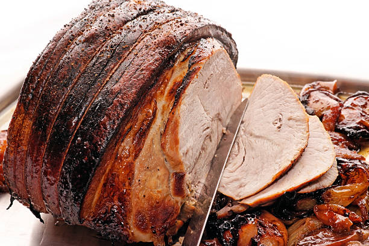

Roast pork leg
Mouthwatering and succulent roasted pork leg that just melts in your mouth, it's so tender.
Ingredients
- 2 ½ tablespoons olive oil
- 2 tablespoons dried sage
- 2 tablespoons garlic powder
- 2 teaspoons salt
- 1 tablespoon onion powder
- 1(5 pound) pork leg with skin
- 1 large onion
- 6 cloves, halved
Directions
- Preheat the oven to 430 degrees F (220 degrees C).
- Combine olive oil, sage, garlic powder, onion powder, and salt in a small bowl.
- Rinse pork leg and pat dry with a paper towel. Rub seasoned olive oil onto the pork leg.
- Slice onion and separate layers into rings. Place onion rings and garlic halves in the bottom of a roaster.
Place pork on top of onions and garlic.
- Roast in the preheated oven for 40 minutes.
Reduce oven temperature to 355 degrees F (180 degrees C)
and roast until an instant-read thermometer inserted into the center reads at least 145 degrees F (63 degrees C),
about 1 hour 20 minutes more.
- Remove from the oven and slice and serve.
Home